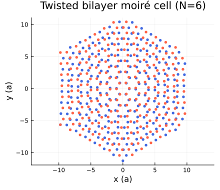
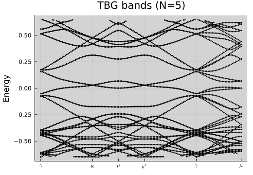

Tutorial 4 — Twisted Bilayer Graphene
Primary notebook: extra/tutorial/Tutorial4_Twisted.ipynb Experimental variants: Tutorial4_Twisted2.ipynb, Tutorial4_Twisted3.ipynb
This tutorial family covers moiré superlattices and the resource-saving tricks needed to handle large twisted bilayer graphene (TBG) systems. The main notebook focuses on a validated workflow, while the follow-up variants capture ongoing experiments—treat them as provisional until you reproduce the outputs.
Learning goals
- Construct twisted honeycomb geometries with
Geometries.honeycomb_twisted(θ_steps). - Assemble continuum-inspired tight-binding models tuned for small twist angles.
- Balance accuracy and runtime by adjusting reciprocal cutoffs, symmetry reductions, and sparse/dense representations.
- Post-process bandstructures and real-space density profiles for moiré cells.
Prerequisites
- Comfort with Tutorials 1–3.
- Access to sufficient RAM/CPU; large twist indices can require several GB.
Workflow outline
- Geometry generation — Pick a twist index (e.g.
θ = 21) and generate bilayer lattices with precise stacking. - Hamiltonian strategy — Decide between tight-binding truncation and continuum approximations; the notebook demonstrates both.
- Symmetry reduction — Use point-group symmetries and Brillouin-zone sampling strategies to limit the matrix dimension.
- Band computation — Leverage
Spectrum.getbandswith sparse matrices or switch to iterative solvers when dense diagonalisation is infeasible. - Observables — Inspect layer and valley content with custom operators; export data for SCF refinement or visualisation.
Live example
figdir = joinpath(pwd(), "figures")
mkpath(figdir)
println("Output figures stored in ", figdir)Output figures stored in /home/runner/work/LatticeQM.jl/LatticeQM.jl/extra/docs/build/tutorials/figuresprintln("Number of sites in mini Brillouin zone = ", size(positions, 2))
println("Twist lattice vectors:")
Structure.Lattices.getA(lat_twisted)3×2 Matrix{Float64}:
19.5192 9.75961
3.62456e-16 16.9041
0.0 0.0mask_pos = positions[3, :] .>= 0
mask_neg = .!mask_pos
p = plot(size=(440, 380), aspect_ratio=1, xlabel="x (a)", ylabel="y (a)", legend=false, title="Twisted bilayer moiré cell (N=6)")
scatter!(positions[1, mask_pos], positions[2, mask_pos]; ms=3.0, markerstrokewidth=0, color=:royalblue)
scatter!(positions[1, mask_neg], positions[2, mask_neg]; ms=3.0, markerstrokewidth=0, color=:tomato)
savefig(p, joinpath(figdir, "tbg_positions.svg"))
nothing
Band structure (N=5)
lat5 = Geometries.honeycomb_twisted(5, 1.0, 3.0)
H5 = Operators.graphene(lat5; format=:sparse, cellrange=2)
ks5 = Structure.kpath(lat5; num_points=140)
b5 = Spectrum.getbands(H5, ks5; format=:sparse, num_bands=40)
p_bands = plot(b5; size=(520, 360), title="TBG bands (N=5)")
savefig(p_bands, joinpath(figdir, "tbg_bands_N5.svg"))
nothingTwist α=6.009° (n,m)=(5,1)
Diagonalization 1%|▌ | ETA: 0:01:17
Diagonalization 16%|█████▋ | ETA: 0:00:12
Diagonalization 29%|██████████▎ | ETA: 0:00:08
Diagonalization 42%|███████████████▏ | ETA: 0:00:06
Diagonalization 55%|███████████████████▊ | ETA: 0:00:04
Diagonalization 69%|█████████████████████████ | ETA: 0:00:03
Diagonalization 84%|██████████████████████████████▏ | ETA: 0:00:01
Diagonalization 99%|███████████████████████████████████▌| ETA: 0:00:00
Diagonalization 100%|████████████████████████████████████| Time: 0:00:08
Validation checklist
- Reproduce low-energy flat bands around the magic angle used in the notebook.
- Monitor memory usage; if it spikes unexpectedly, confirm sparse conversions are applied (
SparseHopsorDenseHopsas appropriate). - Archive resulting figures and data files under
extra/tutorial/output/tbg/(or similar) for comparison across reruns.
Common pitfalls
- Large twist indices explode the matrix size. Start with smaller
Nand increase gradually, usingformat=:sparseand limitingnum_bands. - Ensure the k-path is defined for the reduced Brillouin zone of the moiré lattice; mismatches cause misleading band plots.
Handling experimental notebooks (Tutorial4_Twisted2/3)
- Expect partially completed code paths; read cell notes carefully.
- When results differ from baseline expectations, note findings in your project tracker and decide whether to promote changes into the main tutorial.
- Promote stable improvements back into
Tutorial4_Twisted.ipynbonce validated, then retire the experimental copy.
Suggested extensions
- Couple the workflow to the
twistedgraphene_scfexample for mean-field studies. - Prepare SLURM job scripts using the templates in
extra/examples/twistedgraphene_slurm. - Compare to
Meanfieldobservables to investigate superconducting phases.